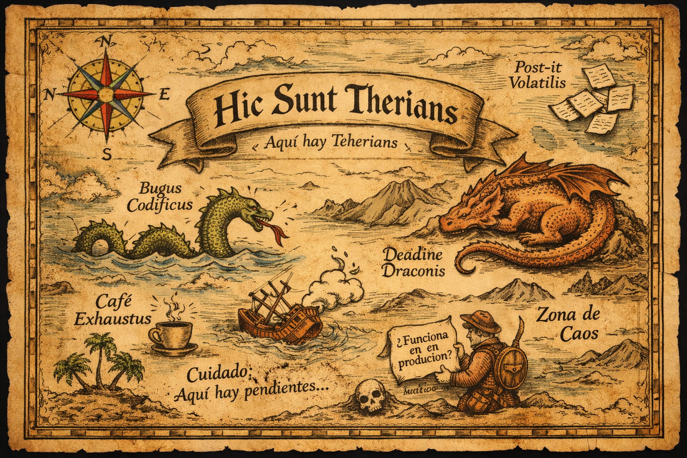

Crisis en Teherians: Se agota el café y declaran estado de emergencia creativa
Publicado hoy · Sección: Drama Existencial
La comunidad de teherians despertó hoy con una noticia devastadora: la reserva oficial de café
bajó a niveles críticos. Expertos aseguran que la productividad cayó un 73% y que varios individuos
fueron vistos mirando la pantalla sin parpadear durante más de 15 minutos.
“Intentamos trabajar con agua”, declaró un teherian anónimo, “pero solo logramos reorganizar
el escritorio cinco veces”.
El consejo supremo teherian anunció un plan de contingencia que incluye té, siestas estratégicas
y promesas de “mañana sí me organizo mejor”.
Teherians descubren botón “guardar” y celebran como si fuera un logro histórico
Publicado ayer · Sección: Tecnología Innecesariamente Dramática
Tras años viviendo al límite con archivos llamados “final_definitivo_ahora_si_v3_REAL”,
la comunidad teherian descubrió el poder de guardar correctamente versiones.
El hallazgo ocurrió cuando uno de ellos preguntó: “¿Y si usamos nombres coherentes?”
El silencio que siguió fue descrito como “impactante”.
Desde entonces, los repositorios muestran orden, claridad y una leve sensación de paz interior.
Aunque algunos veteranos admiten extrañar el caos.
Investigadores confirman: los teherians dicen “ya casi” cuando aún falta el 80% del trabajo
Publicado hace 2 horas · Sección: Ciencia Dudosa
Un estudio reciente reveló que la frase “ya casi termino” en idioma teherian
puede significar cualquier cosa entre “acabo de empezar” y “necesito tres días más”.
Científicos intentaron medir el fenómeno, pero el experimento fue pospuesto varias veces
por razones que aún se están “casi definiendo”.
A pesar de todo, la comunidad mantiene el optimismo. “Lo importante no es cuándo,
sino que eventualmente suceda”, declaró un portavoz mientras abría otra pestaña nueva.
Hic Sunt Therians
(Aquí hay therians… y nadie sabe exactamente qué hacen)

Avistamiento reciente en Veracruz
Evidencia fotográfica de un therian marino en su hábitat natural.
Expertos aún debaten si se trata de evolución natural o simplemente calor extremo.
Los ciudadanos se manifiestan
Ese bicho peludo tiene que morir!!!.